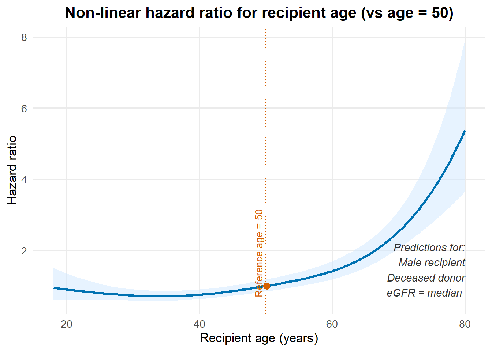

By the end of this lecture, you should be able to:
Understand the linearity assumption for continuous covariates in the Cox model
Diagnose violations of linearity using martingale residuals
Fit a nonlinear Cox model using smooth functions
Interpret nonlinear hazard ratios relative to a reference value
Recognise when nonlinear Cox models are preferable to standard Cox models
2 Linearity assumption in the Cox model
In the standard Cox proportional hazards model, continuous covariates are assumed to have a linear effect on the log hazard.
For a continuous covariate ( X ), the model assumes:
\[
\log h(t \mid X) = \beta X
\]
This implies that:
A 1-unit increase in \(X\) leads to a constant multiplicative change in the hazard
The hazard ratio associated with \(X\) is the same across its entire range
Warning
The proportional hazards assumption concerns how effects change over time,
whereas the linearity assumption concerns how effects change across values of a covariate.
3 Why the linearity assumption may be unrealistic
In many biomedical applications, the effect of a continuous variable on risk is not linear.
Examples include:
Kidney function (eGFR)
Blood pressure
Biomarker concentrations
Age
For example, a decrease in eGFR from 90 to 60 may have a very different impact on risk than a decrease from 60 to 30.
Warning
If the true relationship is nonlinear but we assume linearity,
the Cox model can produce biased effect estimates and misleading interpretations.
4 Diagnosing nonlinearity using martingale residuals
One way to assess the linearity assumption is to examine martingale residuals from a Cox model.
The idea is to:
Fit a Cox model assuming linear effects
Plot martingale residuals against the continuous covariate
Look for systematic patterns
A random cloud around zero suggests linearity
A curved or structured pattern suggests nonlinearity
5 Martingale residuals
Martingale residuals are defined for each individual and are used to assess the functional form of covariates, particularly the linearity assumption for continuous predictors.
For subject \(i\), the martingale residual is defined as:
\(\delta_i\) is the event indicator (1 = event, 0 = censored)
\(T_i\) is the observed event or censoring time
\(\hat{H}_0(T_i)\) is the estimated baseline cumulative hazard
\(X_i\) is the vector of covariates
\(\hat{\beta}\) are the estimated regression coefficients
Intuitively:
\(\delta_i\) is what we observed
\(\hat{H}_0(T_i)\exp(\hat{\beta}^\top X_i)\) is what the model expected
So the martingale residual measures the difference between observed and expected number of events.
Note
Martingale residuals take values in the range \((-\infty, 1]\) and tend to be highly skewed.
6 Schoenfeld residuals (for comparison)
Schoenfeld residuals are defined only at event times and are used to assess the proportional hazards (PH) assumption, not linearity.
For subject \(i\) who experiences an event at time \(t_i\), the Schoenfeld residual for covariate \(X_k\) is:
\[
r_{ik} = X_{ik} - \mathbb{E}(X_k \mid t_i)
\]
where the expectation is taken over the risk set at time \(t_i\).
Schoenfeld residuals represent the difference between:
The observed covariate value at the event time
The expected covariate value under the fitted Cox model
7 Martingale vs Schoenfeld residuals
The key differences are:
Martingale residuals
Defined for all individuals
Used to assess functional form and linearity
Plotted against covariate values
Schoenfeld residuals
Defined only at event times
Used to assess proportional hazards
Plotted against time
Tip
Use Schoenfeld residuals to check whether effects change over time,
and martingale residuals to check whether effects are linear in covariate space.
8 Example: Evidence of nonlinearity in a Cox model
We illustrate the issue of nonlinearity using a continuous predictor (e.g. eGFR).
We begin by fitting a standard Cox proportional hazards model that assumes a linear effect of eGFR on the log hazard. Next, look at the Martingale residuals of this fitted model.
The red curve is a smoothed trend (loess/lowess) for age and the blue curve is smoothed trend for eGFR at baseline.
Warning
If the effect of eGFR at baseline and age were truly linear on the log hazard scale, we would expect the smooth curve to be approximately flat around zero.
Instead, we observe a systematic curved pattern, indicating that the effect of eGFR at baseline and age on graft failure risk is not linear.
This suggests that:
The linearity assumption for eGFR at baseline and age is violated.
A standard Cox model with a linear eGFR term may be misspecified.
✅ Moving beyond linear effects
To accommodate nonlinear relationships between a continuous covariate and the hazard, we can extend the Cox model using smooth functions, such as:
Regression splines
Natural splines
Penalised splines
In the next section, we fit a nonlinear Cox model that allows the effect of eGFR at baseline and age to vary smoothly across its range.
Show R code
#---------nonlinear coxlibrary(mgcv)gam_cox <-gam( time ~ donor_type + recipient_sex +s(age_rec, k =5, bs ="tp") +s(egfr0, k =5, bs ="tp"),family =cox.ph(),data = nonlinear_data,weights = status # 1 = event, 0 = censored)summary(gam_cox)
we also could get the prediction plot using ggplot2 as follows:
✅ eGFR at baseline
The effect of baseline eGFR on graft failure is clearly non-linear. Compared with eGFR = 40 (HR = 1): Very low eGFR (<30) is associated with a substantially higher hazard, indicating worse kidney function strongly increases risk. eGFR between ~30 and 50 shows risk decreasing, reaching its lowest point around ~50. High eGFR (>50) shows a gradual increase in hazard, suggesting a U-shaped or curved relationship. These predictions are for a male recipient receiving a kidney from a deceased donor, at median age.
Show R code
library(ggplot2)df<-nonlinear_data#ageage_seq <-seq(min(df$age_rec), max(df$age_rec), length.out =200)new_age <-data.frame(age_rec = age_seq,egfr0 =median(df$egfr0),donor_type ="Deceased",recipient_sex ="Male")pred <-predict(gam_cox, newdata = new_age, type ="link", se.fit =TRUE)# Reference at age 50ref_index <-which.min(abs(age_seq -50))ref <- pred$fit[ref_index]logHR <- pred$fit - refplot_age <-data.frame(age_rec = age_seq,HR =exp(logHR),lo =exp(logHR -1.96* pred$se.fit),hi =exp(logHR +1.96* pred$se.fit))ref_point <- plot_age[ref_index, ]ggplot(plot_age, aes(x = age_rec, y = HR)) +# CI ribbongeom_ribbon(aes(ymin = lo, ymax = hi),fill ="#cfe8ff", alpha =0.5) +# HR curvegeom_line(colour ="#0072B2", linewidth =1.1) +# Horizontal HR=1geom_hline(yintercept =1, linetype ="dashed", colour ="grey40") +# Vertical reference at age 50geom_vline(xintercept =50, linetype ="dotted", colour ="#D55E00") +# Highlight reference pointgeom_point(data = ref_point,aes(x = age_rec, y = HR),colour ="#D55E00", size =3) +# Annotation for age 50annotate("text",x =50, y =max(plot_age$HR, na.rm =TRUE),label ="Reference age = 50",colour ="#D55E00", angle =90,vjust =-0.5, hjust =1.9, size =3.5) +# New annotation for scenario (male recipient + deceased donor)annotate("text",x =max(plot_age$age_rec),y =min(plot_age$HR),label ="Predictions for:\nMale recipient\nDeceased donor\neGFR = median ",hjust =1, vjust =0,colour ="grey20", size =3.8,fontface ="italic") +labs(title ="Non-linear hazard ratio for recipient age (vs age = 50)",x ="Recipient age (years)",y ="Hazard ratio" ) +theme_minimal(base_size =13) +theme(plot.title =element_text(face ="bold", hjust =0.5),panel.grid.minor =element_blank() )

✅ Age
The effect of recipient age on graft failure is strongly non-linear. Compared with a 50-year-old recipient (HR = 1): Younger adults (<40) have a slightly lower hazard, but the protective effect is modest. Ages 50–60 show a gradual increase in hazard. Older ages (>60) display a rapid, accelerating increase in hazard, with much higher risk by age 75–80. These predictions are for a male recipient receiving a kidney from a deceased donor, at median of eGFR.
Interpretation of covariate effects (linear components)
✅ Donor type (living vs deceased)
HR = 0.63, P < 0.001, Statistically significant.
Recipients of a living donor kidney have approximately a 37% lower hazard of graft failure compared with recipients of deceased-donor kidneys, indicating a strong protective effect.
✅ Recipient sex (female vs male)
HR = 1.07, P = 0.299, Not statistically significant.
Female recipients show a slightly higher estimated hazard compared with males, but this difference is not statistically significant, and there is no strong evidence of a sex effect on graft failure risk.
Source Code
---title: "Lecture 5: More detailes about the cox model"toc: truetoc-depth: 3---```{r, echo=FALSE}knitr::opts_chunk$set( message = FALSE, warning = FALSE)```## Learning objectives::: {.callout-note}By the end of this lecture, you should be able to:- Understand the **linearity assumption** for continuous covariates in the Cox model- Diagnose violations of linearity using **martingale residuals**- Fit a **nonlinear Cox model** using **smooth functions**- Interpret **nonlinear hazard ratios** relative to a reference value- Recognise when **nonlinear Cox models** are preferable to standard Cox models:::## Linearity assumption in the Cox modelIn the standard Cox proportional hazards model, continuous covariates are assumed to have a **linear effect on the log hazard**.For a continuous covariate \( X \), the model assumes:$$\log h(t \mid X) = \beta X$$This implies that:- A **1-unit increase** in $X$ leads to a **constant multiplicative change** in the hazard- The hazard ratio associated with $X$ is the same **across its entire range**::: {.callout-warning}The proportional hazards assumption concerns **how effects change over time**, whereas the linearity assumption concerns **how effects change across values of a covariate**.:::## Why the linearity assumption may be unrealisticIn many biomedical applications, the effect of a continuous variable on risk is **not linear**.Examples include:- Kidney function (eGFR)- Blood pressure- Biomarker concentrations- AgeFor example, a decrease in eGFR from 90 to 60 may have a very different impact on risk than a decrease from 60 to 30.::: {.callout-warning}If the true relationship is nonlinear but we assume linearity, the Cox model can produce **biased effect estimates and misleading interpretations**.:::## Diagnosing nonlinearity using martingale residualsOne way to assess the linearity assumption is to examine **martingale residuals** from a Cox model.The idea is to:1. Fit a Cox model assuming linear effects2. Plot martingale residuals against the continuous covariate3. Look for systematic patterns- A **random cloud** around zero suggests linearity- A **curved or structured pattern** suggests nonlinearity## Martingale residualsMartingale residuals are defined for **each individual** and are used to assess the **functional form** of covariates, particularly the **linearity assumption** for continuous predictors.For subject $i$, the martingale residual is defined as:$$M_i = \delta_i - \hat{H}_0(T_i)\exp(\hat{\beta}^\top X_i)$$where:- $\delta_i$ is the event indicator (1 = event, 0 = censored)- $T_i$ is the observed event or censoring time- $\hat{H}_0(T_i)$ is the estimated baseline cumulative hazard- $X_i$ is the vector of covariates- $\hat{\beta}$ are the estimated regression coefficientsIntuitively:- $\delta_i$ is what we **observed**- $\hat{H}_0(T_i)\exp(\hat{\beta}^\top X_i)$ is what the model **expected**So the martingale residual measures the **difference between observed and expected number of events**.::: {.callout-note}Martingale residuals take values in the range $(-\infty, 1]$ and tend to be highly skewed.:::## Schoenfeld residuals (for comparison)Schoenfeld residuals are defined **only at event times** and are used to assess the **proportional hazards (PH) assumption**, not linearity.For subject $i$ who experiences an event at time $t_i$, the Schoenfeld residual for covariate $X_k$ is:$$r_{ik} = X_{ik} - \mathbb{E}(X_k \mid t_i)$$where the expectation is taken over the **risk set at time $t_i$**.Schoenfeld residuals represent the difference between:- The observed covariate value at the event time- The expected covariate value under the fitted Cox model## Martingale vs Schoenfeld residualsThe key differences are:- **Martingale residuals** - Defined for **all individuals** - Used to assess **functional form and linearity** - Plotted against covariate values- **Schoenfeld residuals** - Defined **only at event times** - Used to assess **proportional hazards** - Plotted against **time**::: {.callout-tip}Use **Schoenfeld residuals** to check *whether effects change over time*, and **martingale residuals** to check *whether effects are linear in covariate space*.:::## Example: Evidence of nonlinearity in a Cox modelWe illustrate the issue of nonlinearity using a continuous predictor (e.g. **eGFR**).We begin by fitting a **standard Cox proportional hazards model** that assumes a **linear effect** of eGFR on the log hazard. Next, look at the Martingale residuals of this fitted model.```{r, message=FALSE, warning=FALSE}library(survival)library(ggplot2)nonlinear_data <- read.csv("nonlinear_cox_data.csv")cox_linear <- coxph( Surv(time, status) ~ donor_type + recipient_sex + age_rec + egfr0, data = nonlinear_data )mart <- residuals(cox_linear, type = "martingale")#ageggplot(nonlinear_data, aes(age_rec, mart)) + geom_point(alpha = 0.3) + geom_smooth(se = FALSE, col = "red") + geom_hline(yintercept = 0, linetype = "dashed") + labs( x = "Recipient age", y = "Martingale residuals", title = "Linearity check for age" )#egfrggplot(nonlinear_data, aes(egfr0, mart)) + geom_point(alpha = 0.3) + geom_smooth(se = FALSE, col = "blue") + geom_hline(yintercept = 0, linetype = "dashed") + labs( x = "Baseline eGFR", y = "Martingale residuals", title = "Linearity check for eGFR" )```**Interpretation of the martingale residual plot**In this plot:- The points represent martingale residuals - The red curve is a smoothed trend (loess/lowess) for age and the blue curve is smoothed trend for eGFR at baseline.::: {.callout-warning}If the effect of eGFR at baseline and age were truly linear on the log hazard scale,we would expect the smooth curve to be approximately flat around zero.:::Instead, we observe a systematic curved pattern, indicating that the effect of eGFR at baseline and age on graft failure risk is not linear.This suggests that:- The linearity assumption for eGFR at baseline and age is violated. - A standard Cox model with a linear eGFR term may be misspecified. **✅ Moving beyond linear effects**To accommodate nonlinear relationships between a continuous covariate and the hazard, we can extend the Cox model using smooth functions, such as:- Regression splines - Natural splines - Penalised splines In the next section, we fit a nonlinear Cox model that allows the effect of eGFR at baseline and age to vary smoothly across its range.```{r, warning=FALSE}#---------nonlinear coxlibrary(mgcv)gam_cox <- gam( time ~ donor_type + recipient_sex + s(age_rec, k = 5, bs = "tp") + s(egfr0, k = 5, bs = "tp"), family = cox.ph(), data = nonlinear_data, weights = status # 1 = event, 0 = censored)summary(gam_cox)plot(gam_cox)```we also could get the prediction plot using `ggplot2` as follows:✅ **eGFR at baseline**The effect of baseline eGFR on graft failure is clearly non-linear. Compared with eGFR = 40 (HR = 1):Very low eGFR (<30) is associated with a substantially higher hazard, indicating worse kidney function strongly increases risk.eGFR between ~30 and 50 shows risk decreasing, reaching its lowest point around ~50.High eGFR (>50) shows a gradual increase in hazard, suggesting a U-shaped or curved relationship.These predictions are for a male recipient receiving a kidney from a deceased donor, at median age.```{r, warning=FALSE}library(ggplot2)df<-nonlinear_data#ageage_seq <- seq(min(df$age_rec), max(df$age_rec), length.out = 200)new_age <- data.frame( age_rec = age_seq, egfr0 = median(df$egfr0), donor_type = "Deceased", recipient_sex = "Male")pred <- predict(gam_cox, newdata = new_age, type = "link", se.fit = TRUE)# Reference at age 50ref_index <- which.min(abs(age_seq - 50))ref <- pred$fit[ref_index]logHR <- pred$fit - refplot_age <- data.frame( age_rec = age_seq, HR = exp(logHR), lo = exp(logHR - 1.96 * pred$se.fit), hi = exp(logHR + 1.96 * pred$se.fit))ref_point <- plot_age[ref_index, ]ggplot(plot_age, aes(x = age_rec, y = HR)) + # CI ribbon geom_ribbon(aes(ymin = lo, ymax = hi), fill = "#cfe8ff", alpha = 0.5) + # HR curve geom_line(colour = "#0072B2", linewidth = 1.1) + # Horizontal HR=1 geom_hline(yintercept = 1, linetype = "dashed", colour = "grey40") + # Vertical reference at age 50 geom_vline(xintercept = 50, linetype = "dotted", colour = "#D55E00") + # Highlight reference point geom_point(data = ref_point, aes(x = age_rec, y = HR), colour = "#D55E00", size = 3) + # Annotation for age 50 annotate("text", x = 50, y = max(plot_age$HR, na.rm = TRUE), label = "Reference age = 50", colour = "#D55E00", angle = 90, vjust = -0.5, hjust = 1.9, size = 3.5) + # New annotation for scenario (male recipient + deceased donor) annotate("text", x = max(plot_age$age_rec), y = min(plot_age$HR), label = "Predictions for:\nMale recipient\nDeceased donor\neGFR = median ", hjust = 1, vjust = 0, colour = "grey20", size = 3.8, fontface = "italic") + labs( title = "Non-linear hazard ratio for recipient age (vs age = 50)", x = "Recipient age (years)", y = "Hazard ratio" ) + theme_minimal(base_size = 13) + theme( plot.title = element_text(face = "bold", hjust = 0.5), panel.grid.minor = element_blank() )```✅ **Age**The effect of recipient age on graft failure is strongly non-linear. Compared with a 50-year-old recipient (HR = 1):Younger adults (<40) have a slightly lower hazard, but the protective effect is modest.Ages 50–60 show a gradual increase in hazard.Older ages (>60) display a rapid, accelerating increase in hazard, with much higher risk by age 75–80.These predictions are for a male recipient receiving a kidney from a deceased donor, at median of eGFR.```{r, warning=FALSE}#egfregfr_seq <- seq(min(df$egfr0), max(df$egfr0), length.out = 200)new_egfr <- data.frame( age_rec = median(df$age_rec), egfr0 = egfr_seq, donor_type = "Deceased", recipient_sex = "Male")pred2 <- predict(gam_cox, newdata = new_egfr, type = "link", se.fit = TRUE)# Reference at eGFR = 40ref_index2 <- which.min(abs(egfr_seq - 40))ref2 <- pred2$fit[ref_index2]logHR2 <- pred2$fit - ref2plot_egfr <- data.frame( egfr0 = egfr_seq, HR = exp(logHR2), lo = exp(logHR2 - 1.96 * pred2$se.fit), hi = exp(logHR2 + 1.96 * pred2$se.fit))ref_point2 <- plot_egfr[ref_index2, ]library(ggplot2)ggplot(plot_egfr, aes(x = egfr0, y = HR)) + # CI ribbon geom_ribbon(aes(ymin = lo, ymax = hi), fill = "#fde0dd", alpha = 0.5) + # HR curve geom_line(colour = "#D81B60", linewidth = 1.1) + # Horizontal HR=1 line geom_hline(yintercept = 1, linetype = "dashed", colour = "grey40") + # Vertical line at eGFR=40 geom_vline(xintercept = 40, linetype = "dotted", colour = "#1B9E77") + # Highlight reference point geom_point(data = ref_point2, aes(x = egfr0, y = HR), colour = "#1B9E77", size = 3) + # Annotation for reference annotate("text", x = 40, y = max(plot_egfr$HR, na.rm = TRUE), label = "Reference eGFR = 40", colour = "#1B9E77", angle = 90, vjust = 0.001, hjust = 0.5, size = 3.5) + # Scenario annotation annotate("text", x = max(plot_egfr$egfr0), y = min(plot_egfr$HR), label = "Predictions for:\nMale recipient\nDeceased donor\nAge = median", hjust = 1, vjust = 0, colour = "grey20", size = 3.8, fontface = "italic") + labs( title = "Non-linear hazard ratio for baseline eGFR (vs eGFR = 40)", x = "Baseline eGFR (mL/min/1.73m²)", y = "Hazard ratio" ) + theme_minimal(base_size = 13) + theme( plot.title = element_text(face = "bold", hjust = 0.5), panel.grid.minor = element_blank() )```::: {.callout-tip}### Interpretation of covariate effects (linear components)✅ **Donor type (living vs deceased)** HR = 0.63, *P* < 0.001, Statistically significant. Recipients of a **living donor kidney** have approximately a **37% lower hazard of graft failure** compared with recipients of deceased-donor kidneys, indicating a **strong protective effect**.✅ **Recipient sex (female vs male)** HR = 1.07, *P* = 0.299, Not statistically significant. Female recipients show a slightly higher estimated hazard compared with males, but this difference is **not statistically significant**, and there is **no strong evidence of a sex effect** on graft failure risk.:::